01-MySQL基础
Mysql是一种关系型数据库，这篇博客作为数据库的基础篇主要讲解操作关系型数据的SQL编程语言。
数据库相关概念
数据库
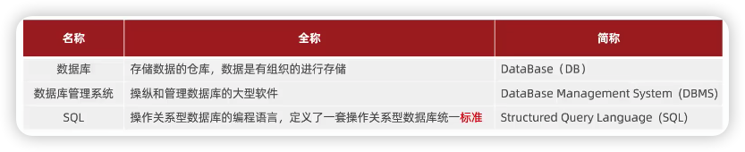
数据模型
数据模型是数据库中数据的存储方式，是数据库系统的基础。
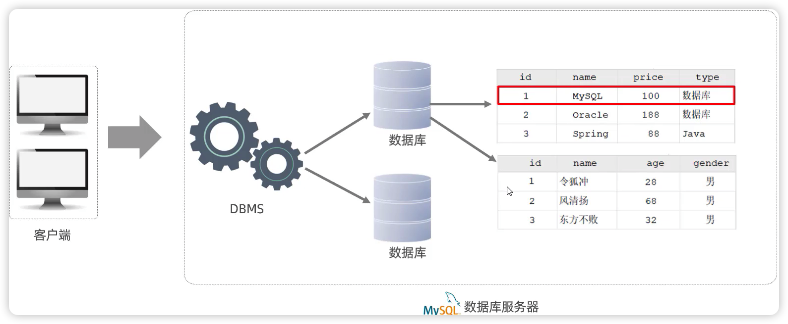SQL语言
DDL 数据定义语言
数据库操作
1
2
3
4
5show databases;
create database 数据库名;
use 数据库名;
select database();
drop database 数据库名;表操作
1
2
3
4
5
6show tables;
create table 表名 (字段 字段类型, 字段 字段类型...);
desc 表名;
show create table 表名;
alter table 表名 add / modify / change / drop / rename to ...;
drop table 表名;创建数据表时要指定字段的数据类型，SQL的数据类型是很重要的知识点：
数值类型
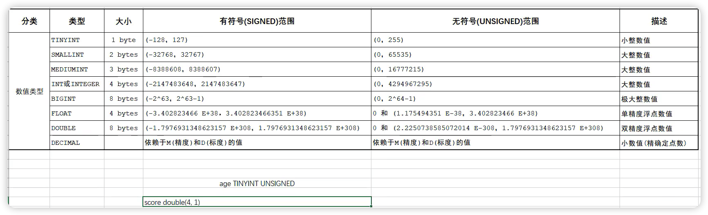
字符串类型
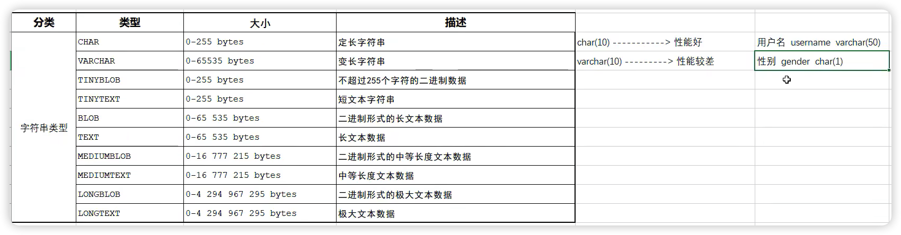
varchar类型会先计算数据所占用的存储空间，所以性能相对char会差一些。varchar用来存储变长字符串，char用来存储定长字符串。日期时间类型
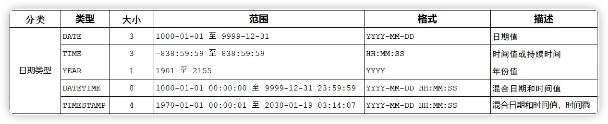
DML 数据操作语言
添加数据
1
insert into 表名 (字段1, 字段2, ...) values (值1, 值2, ...)[, (值1, 值2, ...),...];
修改数据
1
update 表名 set 字段1 = 值1, 字段2 = 值2... [where 条件];
删除数据
1
delete from 表名 [where 条件];
DQL 数据查询语言
1 | select 字段列表 from 表名列表 where 条件列表 group by 分组字段列表 having 分组后条件列表 order by 排序字段列表 limit 分页参数 |
基本查询
1
2
3select * from 表名;
select 字段1 [as 别名], 字段2 [as 别名]... from 表名;
select distinct 字段列表 from 表名;条件查询
1
select * from 表名 where 条件;
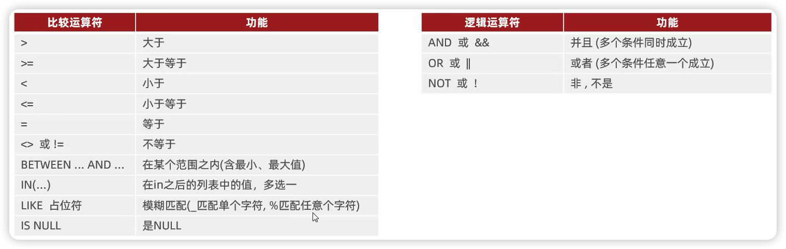
聚合函数
将一列数据作为一个整体，进行纵向计算。
null值不参与所有聚合函数运算。
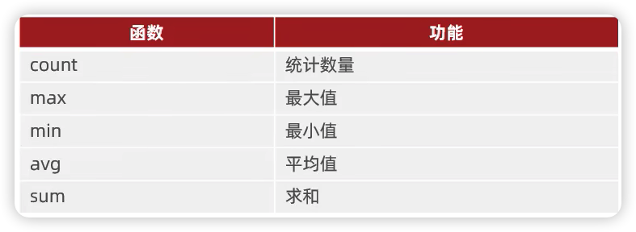1
select 聚合函数(字段列表) from 表名;
分组查询
1
select 字段名 from 表名 [where 条件] group by 分组字段名 [having 分组过滤后的条件];
where 与 having 的区别：
① 执行时机不同：where 是分组之前进行过滤，不满足 where 条件是不参与 group by 分组的；而 having 是分组之后的条件对结果进行过滤；
② 判断条件不同：where 是不能对聚合函数进行判断，而 having 可以。
执行顺序：where > 聚合函数 > having
分组之后，查询的字段一般为聚合函数和分组字段，查询其他字段无任何意义
排序查询
1
select 字段名 from 表名 order by 字段1 排序方式1, order by 字段1 排序方式1 ...;
ASC：升序（默认值）DESC：降序
分页查询
1
select 字段名 from 表名 limit 起始索引, 查询记录数;
起始索引从0开始，
起始索引 = (查询页码 - 1) * 每页显示记录数；分页查询是数据库的“方言”；
如果查询的是第一页的数据，起始索引可以省略，直接简写为
limit 10。
DQL语句执行顺序
可以通过起别名的方式验证sql的执行顺序。
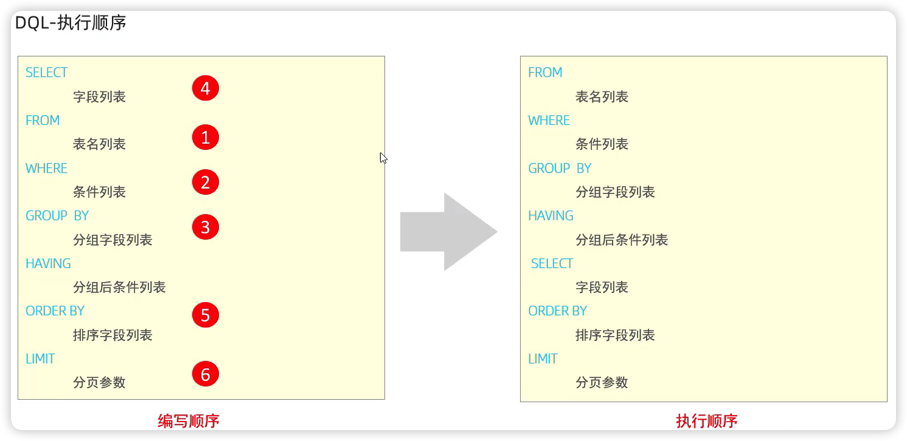DCL 数据控制语言
用来管理数据库用户，控制数据库的访问权限等。这类 SQL 开发人员操作较少，主要是 DBA 数据库管理员使用。
管理用户
查询用户
1
2use mysql;
select * from user;创建用户
1
create user '用户名'@'主机名' identified by '密码';
修改用户密码
1
alter user '用户名'@'主机名' identified with mysql_native_password by '新密码';
删除用户
1
drop user '用户名'@'主机名';
权限控制
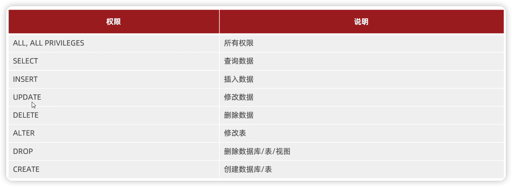查询权限
1
show grants for '用户名'@'主机名';
授予权限
1
grant 权限列表 on 数据库名.表名 to '用户名'@'主机名';
撤销权限
1
revoke 权限列表 on 数据库名.表名 from '用户名'@'主机名';
函数
字符串函数
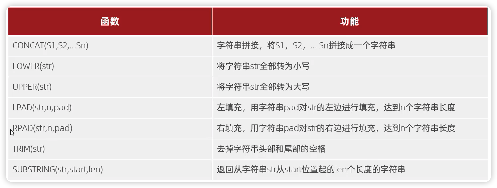数值函数
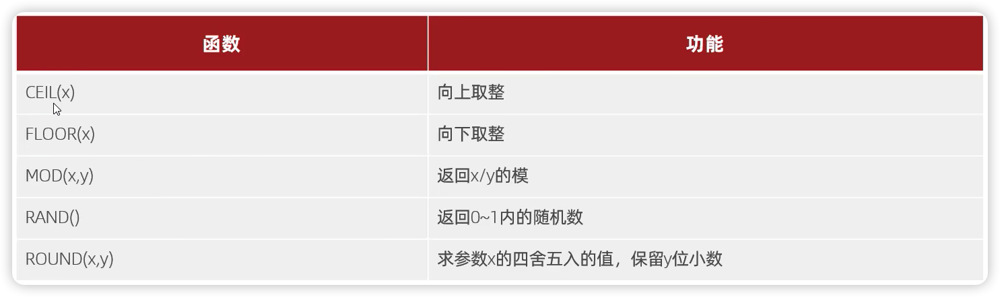
练习：通过数据库内置函数，生成6位验证码：
1 | select lpad(round(rand()*1000000, 0), 6, '0'); |
日期函数
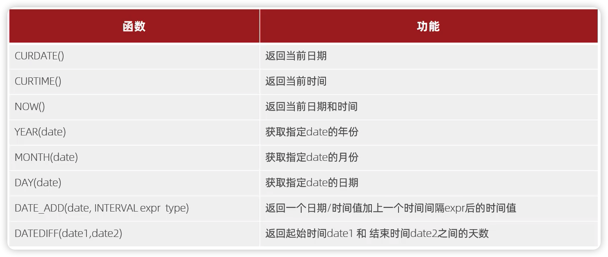流程函数
在sql语句中实现条件筛选，提高语句的效率。
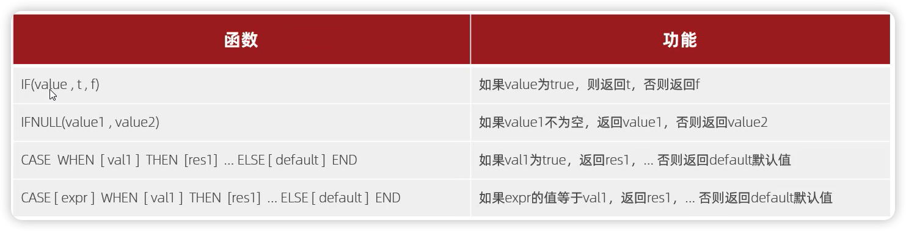约束
约束是作用于表中字段的规则，用于限制存储在表中的数据，可以在创建表或修改表的时候添加约束。目的是保证数据库中数据的正确、有效性和完整性。
约束分类
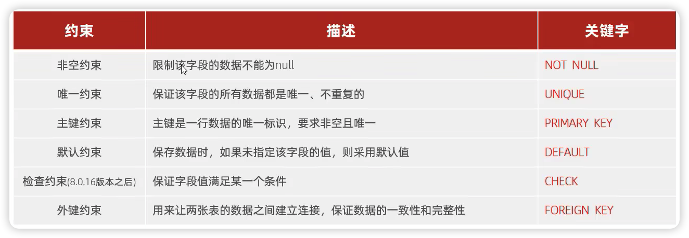自增：
auto_increment. 当插入一条数据失败时，这时候这条未插入的数据已经向数据库申请了自增的字段值。
外键约束
外键是用来让两张表的数据相互建立连接，从而保证数据的一致性和完整性的。
下面的两张表，仅存在逻辑上的关系，在数据库层面并未建立外键关联，所以是无法保证数据的一致性和完整性的。
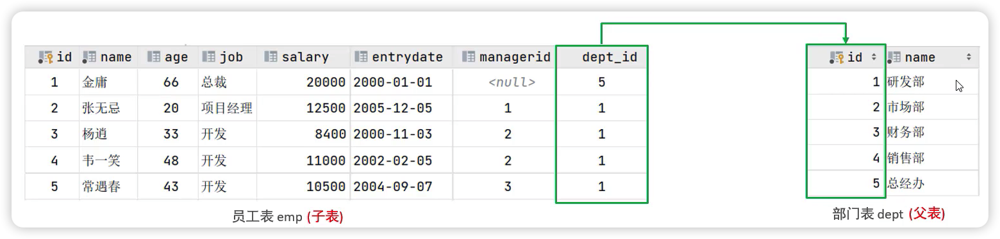
添加外键：
1 | alter table 表名 add constraint 外键名称 foreign key (外键字段名) references 主表(主表列名); |
删除外键：
1 | alter table 表名 drop foreign key 外键名称; |
删除/更新行为：
1 | alter table 表名 add constraint 外键名称 foreign key (外键字段名) references 主表(主表列名) on update 行为 on delete 行为; |
多表查询
多表关系
- 一对多
一个部门对应多个员工，一个员工对应一个部门。在多的一方建立外键，指向一的一方的主键。
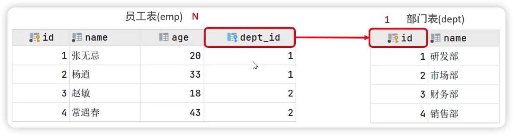- 多对多
一个学生可以选修多门课程，一门课程可以被多个学生选择。建立第三张中间表，中间表至少包含两个外键，分别关联两方主键。
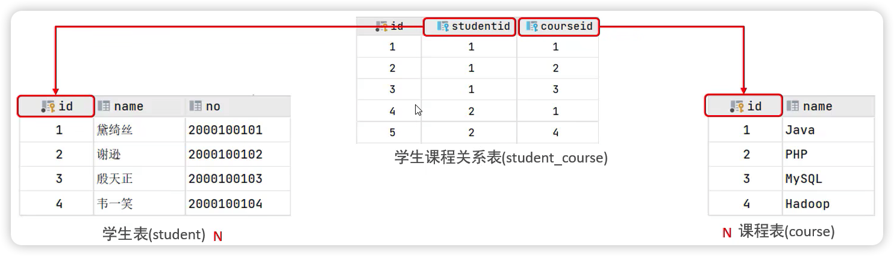- 一对一
用户与用户详情的关系。多用于单表拆分，将一张表的基础字段放在一张表中，其他详情字段放在另一张表中，以提升操作效率。在任意一方加入外键，关联另一方的主键，并且设置外键是唯一的(UNIQUE) – 保证一对一。

多表查询
内连接
查询的是两张表交集的部分。
隐式内连接
1
select 字段列表 from 表1, 表2 where 条件...;
显式内连接
1
select 字段列表 from 表1 [inner] join 表2 on 连接条件...;
外连接
左外连接：相当于查询表1（左表）的所有数据（包含表1和表2交集部分）
1
select 字段列表 from 表1 left [outer] join 表2 on 条件...;
右外连接：相当于查询表2（右表）的所有数据（包含表1和表2交集部分）
1
select 字段列表 from 表1 right [outer] join 表2 on 条件...;
自连接
可以是内连接查询，也可以是外连接查询。
1 | select 字段列表 from 表A 别名A join 表A 别名B on 条件...; |
联合查询
把多次查询的结果合并起来，形成一个新的查询结果集
1 | select 字段列表 from 表A union [all] select 字段列表 from 表B; |
对于联合查询的多张表的列数必须保持一致，字段类型也需要保持一致；union是将结果合并后去重，union all是只将结果合并。
子查询（嵌套查询）
1 | select * from t1 where column1 = (select column1 from t2); |
根据子查询的结果不同分为：标量子查询、列子查询、行子查询、表子查询。
标量子查询：
>,<,=…列子查询：
in,all,any…行子查询：
in,not in,=,<>表子查询：
in
事务
事务是一组操作的集合，他是一个不可分割的工作单位，事务会把所有的操作作为一个整体一起向系统提交或撤销操作请求，即这些操作要么同时成功、要么同时失败。保证数据的正确性和完整性。
默认MySQL的事务是自动提交的，也就是说当执行一条DML语句后，MySQL会立即隐式的提交事务。（开启事务 → 提交/回滚事务）
事务操作
方式一
查看/设置事务提交方式：
1
2select @@autocommit;
set @@autocommit = 0;提交事务
1
commit;
回滚事务
1
rollback;
方式二
开启事务后，必须手动commit提交事务（否则数据是不会在表中变化的），或者rollback回滚事务，才能结束这个事务。一旦事务提交，则其所做的修改就会永久保存到数据库中。
开启事务
1
start transaction 或 begin;
提交事务
回滚事务
事务四大特性（面试题）
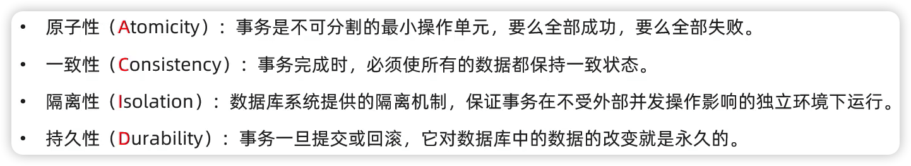
并发事务问题
脏读
一个事务读到另一个事务还没有提交的数据。
Question：在事务没提交前更改的数据信息，保存在数据库的什么位置？
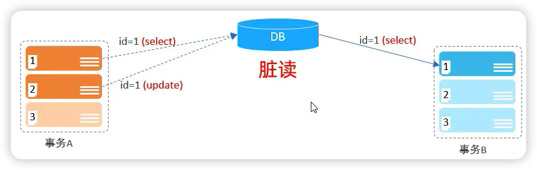不可重复读
一个事务先后读取同一条记录，但两次读取的数据不同，称之为不可重复读。
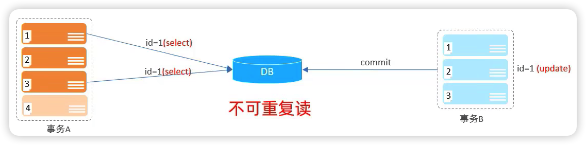幻读
一个事务按照条件查询数据时，没有对应的数据行，但是在插入数据时，又发现这行数据已经存在了。
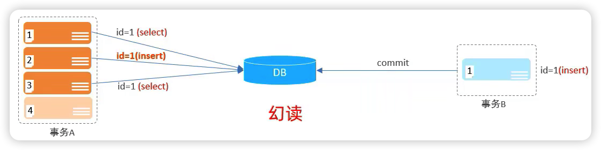
事务的隔离级别
事务的隔离级别是为了解决并发事务问题。设计数据库时需要衡量数据库的安全级别和并发性能。
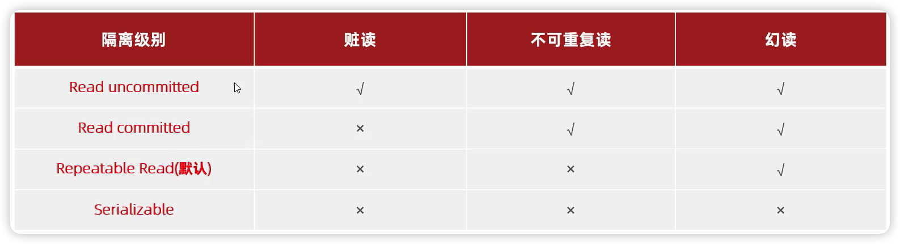